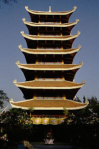

VietNamQuocTu/T.P.HoChiMinh
越南国寺/ホーチミン
バイタクのささやき攻撃をかわし、越南国寺へと歩いて向かった。
越南国寺。この国を背負ってそうな名前は一体何なんでしょう。
遠くからも見える塔がこの寺のシンボルだ。

境内から見た塔。
実際は8階建てだが一番下の階は基段部という事になっているようなので七重の塔という事になるのだろう。
下からあおって撮っているので上の方が小さく見えるが実際は上から下まで同じ大きさの塔である。
つくられたのは70年代あたりだろう。コンクリート造の塔である。
逓減率とかそういうコトバや概念はまっったく存在しないプロポーションだ。
かといって味気ない塔かというとそんな事もなくて中々味わい深い塔である。外から見る限り各階に仏像が祀られている。
と、いうことは上まで登れるということやね。さて登ってみましょうか。
１階は本堂スペース。相変わらず電飾光背がトリップ感を高めてくれる仏陀像やスパンコール魂全開の観音像などが並ぶ極楽っぷり。
そんな中に生誕釈迦像。ムチムチしていて何かキリスト生誕像とイメージがだぶる。テカテカしているし。
塔の真下から上を眺める。
螺旋状の階段が延々と続いている。こりゃあ大変だぞ、と思ったら階段は2階までで、その先の階段には柵があり行けないようになっている。
近くにいた坊さんに聞くとどういう訳だか上には行けないという。頼み込んでもニヤニヤ笑うだけで結局上には行かせてくれなかった。残念。
２階、つまり七重の塔の一層目には様々な仏像が飾られておりパラダイス度を高めていた。
並ぶ仏陀。十三仏ということなんでしょうか。壁面に掛けられているリトル仏陀がよろしい。
塔の四隅には四天王がいて私のような隙あらば塔に登ってやろうという不心得者の侵入に睨みをきかせている。
塔の裏側には弥勒菩薩。これは香港や台湾でも見たが布袋さんではなく弥勒菩薩なのだ。
勿論全ての像がテカテカ度200％
前庭には様々な仲間達がいて楽しげ。特にモザイクの龍は圧巻。
次へいきましょう
越南珍寺劇場
珍寺大道場 HOME